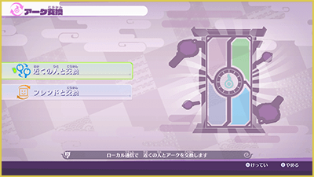

Intercambios y NFC
Intercambio de Arks
En la aplicación "Intercambio de Arks" del Yo-kai Pad, puedes intercambiar Yo-kai con otros jugadores.
Elige una de las dos opciones: "Intercambiar con alguien cercano" o "Intercambiar con un amigo".
※ Al realizar un intercambio, el progreso se guarda automáticamente.
※ Asegúrate de actualizar el juego a la versión más reciente antes de realizar un intercambio. Es posible que no se puedan realizar intercambios entre versiones diferentes.

Intercambiar con alguien cercano (comunicación local)
Al seleccionar "Intercambiar con alguien cercano", puedes intercambiar amigos Yo-kai con personas que estén cerca utilizando la comunicación local.
- ① Una de las dos personas selecciona "Crear una solicitud" y comienza la búsqueda. La otra persona debe seleccionar al jugador con el que quiere intercambiar en la lista de solicitudes.
- ② Cuando comience el intercambio, ambos jugadores deben seleccionar el Yo-kai que quieren intercambiar.
- ③ En la pantalla de confirmación, selecciona «Intercambiar» para comenzar el intercambio.
Intercambiar con un amigo (comunicación online)
Al seleccionar "Intercambiar con un amigo", puedes intercambiar amigos Yo-kai con amigos que se encuentren lejos mediante Internet.
- ① Al seleccionar "Intercambiar con un amigo", el juego se conecta a Internet.
- ② Cuando la conexión se haya establecido correctamente, una de las dos personas selecciona "Crear una solicitud" y comienza la búsqueda. La otra persona debe seleccionar al jugador con quien intercambiará en la lista de solicitudes.
- ③ Cuando comience el intercambio, ambos jugadores deben seleccionar el Yo-kai que quieren intercambiar.
- ④ En la pantalla de confirmación, selecciona "Intercambiar" para comenzar el intercambio.
Conexión con NFC
En la aplicación "Escaneo de Arks" del Yo-kai Pad, puedes obtener almas, monedas de la expednekai y otros objetos escaneandp, mediante el Joy-Con™ derecho u otro dispositivo compatible, los datos del chip NFC integrado en objetos como las Arks Yo-kai y las Espadas Sagradas.
- ※ Tras el escaneo, el progreso se guarda automáticamente.
- ※ Algunos objetos solo pueden escanearse una vez, mientras que otros pueden escanear una vez al día.